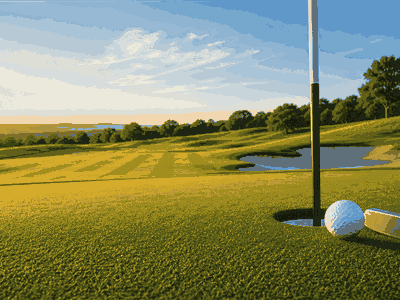

Masters Tournament
First held1934
FrequencyAnnual
Top 4 green jackets
1 United StatesJack NicklausMasters wins196319651966197219751986
United StatesJack NicklausMasters wins196319651966197219751986
6
2United StatesTiger WoodsMasters wins19972001200220052019
5
3United StatesArnold PalmerMasters wins1958196019621964
4
4 South AfricaGary PlayerMasters wins196119741978
South AfricaGary PlayerMasters wins196119741978
3

More golfGolf topicMore majors, courses and calendar moments.
Masters Tournament 2027 in Augusta
CountryUnited States
CityAugusta
VenueAugusta National Golf Club
Dates8-11 Apr 2027
StatusScheduled
Format72-hole major